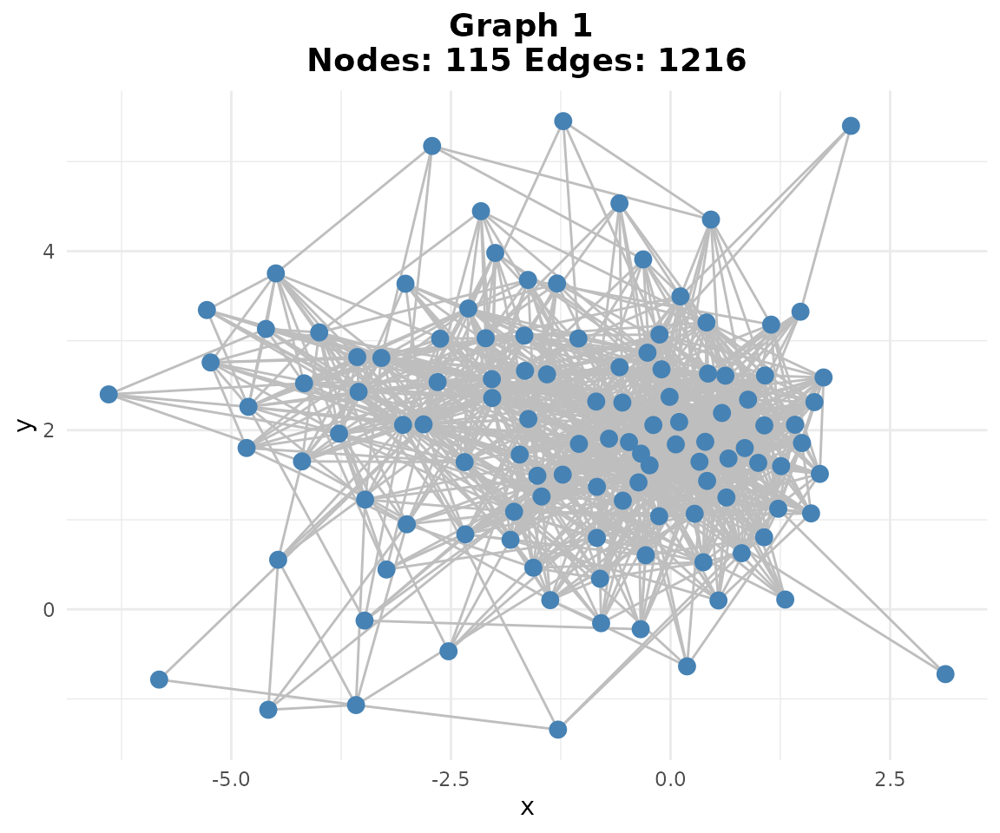
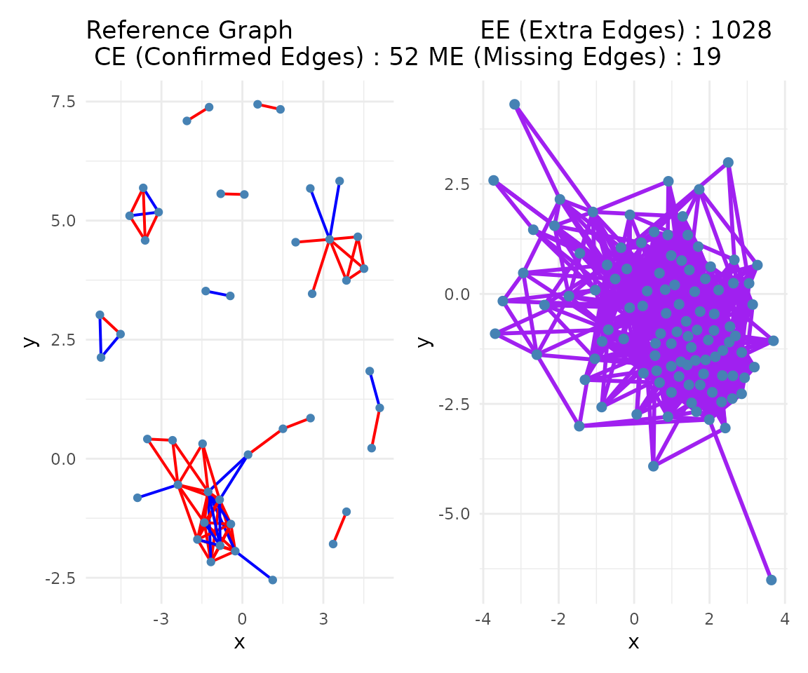
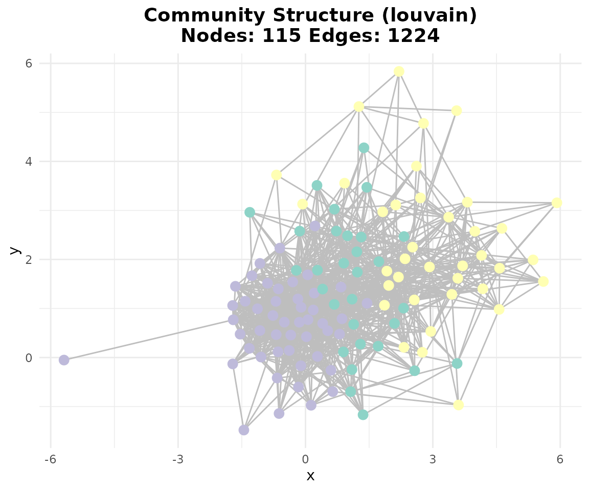

scGraphVerse Case Study: B-cell GRN Reconstruction
Francesco Cecere
Source:vignettes/case_study.Rmd
case_study.RmdAbstract
This vignette demonstrates the scGraphVerse workflow on a two-sample B-cell single-cell RNA-seq dataset. We show how to:
- Load and preprocess public PBMC data.
- Infer gene regulatory networks withJRF.
- Build consensus networks and detect communities.
- Validate inferred edges using STRINGdb.
1. Dataset and Preprocessing
We use two public PBMC Seurat objects containing whole-blood samples. Our goal is to focus on healthy B cells and a common gene set.
urls <- list(
url1 = paste0(
"https://www.dropbox.com/s/r8qwsng79rhp9gf/",
"SCA_scRNASEQ_TISSUE_WHOLE_BLOOD.RDS?dl=1"
),
url2 = paste0(
"https://www.dropbox.com/s/grt5371v5qarn54/",
"SCA_scRNASEQ_TISSUE_BLOOD.RDS?dl=1"
)
)
# Load Seurat objects
pbmc1 <- download_Atlas(file_url = urls[[1]])
pbmc2 <- download_Atlas(file_url = urls[[2]])
# Select top variable genes for B cells, removing ribosomal/mitochondrial
genes1 <- selgene(pbmc1,
top_n = 150,
cell_type = "B_cell",
cell_type_col = "CELL_TYPE",
remove_rib = TRUE,
remove_mt = TRUE
)
#> Using Seurat assay 'RNA' slot 'data' (log-normalized).
#> Subsetted to 197 cells where CELL_TYPE = 'B_cell'.
#> Removed mitochondrial genes matching '^MT-'.
#> Removed ribosomal genes matching '^RP[SL]'.
#> Top 150 genes selected based on mean expression.
genes2 <- selgene(pbmc2,
top_n = 150,
cell_type = "B_cell",
cell_type_col = "CELL_TYPE",
remove_rib = TRUE,
remove_mt = TRUE
)
#> Using Seurat assay 'RNA' slot 'data' (log-normalized).
#> Subsetted to 369 cells where CELL_TYPE = 'B_cell'.
#> Removed mitochondrial genes matching '^MT-'.
#> Removed ribosomal genes matching '^RP[SL]'.
#> Top 150 genes selected based on mean expression.
# Intersection of gene sets and subset
common_genes <- intersect(genes1, genes2)
pbmc1_sub <- subset(pbmc1, features = common_genes)
pbmc2_sub <- subset(pbmc2, features = common_genes)
# Filter to B cells
b1 <- subset(pbmc1_sub, subset = CELL_TYPE == "B_cell")
b2 <- subset(pbmc2_sub, subset = CELL_TYPE == "B_cell")
# List for multi-sample analysis
bcell_list <- list(b1, b2)2. Network Inference
We infer GRNs using three algorithms. Replace method to
switch.
# Choose method: "GENIE3", "GRNBoost2", or "JRF"
method <- "GENIE3"
networks <- infer_networks(
count_matrices_list = bcell_list,
method = method,
nCores = 10
)
#> Warning: The `slot` argument of `GetAssayData()` is deprecated as of SeuratObject 5.0.0.
#> ℹ Please use the `layer` argument instead.
#> ℹ The deprecated feature was likely used in the scGraphVerse package.
#> Please report the issue at
#> <https://github.com/francesco-cecere/scGraphVerse/issues>.
#> This warning is displayed once every 8 hours.
#> Call `lifecycle::last_lifecycle_warnings()` to see where this warning was
#> generated.2.1. Building Adjacency Matrices
Convert edge lists to weighted matrices, symmetrize, and apply threshold.
# Weighted adjacency
wadj <- generate_adjacency(networks)
# Symmetrize
swadj <- symmetrize(wadj, weight_function = "mean")
# Binary cutoff (top 5%)
binary_adj <- cutoff_adjacency(
count_matrices = bcell_list,
weighted_adjm_list = swadj,
n = 2,
method = method,
quantile_threshold = 0.95,
nCores = 10
)
# Plot
plotg(binary_adj)3. Consensus and Community Detection
Aggregate multiple binary networks into a consensus and find network modules.
# Consensus by vote
consensus <- create_consensus(binary_adj, method = "vote")
plotg(list(consensus))
compare_consensus(consensus_matrix = consensus, false_plot = TRUE)
#> Initializing STRINGdb...
#> Mapping genes to STRING IDs...
#> Mapped 116 genes to STRING IDs.
#> Retrieving physical interactions from STRING API...
#> Found 71 STRING physical interactions.
#> Adjacency matrices constructed successfully.
# Community detection
communities <- community_path(consensus)
#> Detecting communities...
#> Running pathway enrichment...
#> 'select()' returned 1:1 mapping between keys and columns
#> Reading KEGG annotation online: "https://rest.kegg.jp/link/hsa/pathway"...
#> Reading KEGG annotation online: "https://rest.kegg.jp/list/pathway/hsa"...
#> 'select()' returned 1:1 mapping between keys and columns
#> 'select()' returned 1:1 mapping between keys and columns4. Validation with STRINGdb
Fetch high-confidence interactions from STRING and evaluate true positives.
str <- stringdb_adjacency(
genes = rownames(consensus),
species = 9606,
required_score = 900,
keep_all_genes = TRUE
)$binary
#> Initializing STRINGdb...
#> Mapping genes to STRING IDs...
#> Mapped 116 genes to STRING IDs.
#> Retrieving physical interactions from STRING API...
#> Found 71 STRING physical interactions.
#> Adjacency matrices constructed successfully.
ground_truth <- symmetrize(list(str), weight_function = "mean")[[1]]
# Edge mining: TP rates
em <- edge_mining(list(consensus),
query_edge_types = "TP",
ground_truth = ground_truth
)5. Conclusion
This case study illustrates how scGraphVerse enables end-to-end GRN reconstruction and validation in single-cell data. Users can swap inference algorithms, tune thresholds, and incorporate external prior networks.
Session Information
sessionInfo()
#> R version 4.4.2 (2024-10-31)
#> Platform: x86_64-pc-linux-gnu
#> Running under: Ubuntu 20.04.2 LTS
#>
#> Matrix products: default
#> BLAS: /usr/lib/x86_64-linux-gnu/blas/libblas.so.3.9.0
#> LAPACK: /usr/lib/x86_64-linux-gnu/lapack/liblapack.so.3.9.0
#>
#> locale:
#> [1] LC_CTYPE=en_US.UTF-8 LC_NUMERIC=C
#> [3] LC_TIME=it_IT.UTF-8 LC_COLLATE=en_US.UTF-8
#> [5] LC_MONETARY=it_IT.UTF-8 LC_MESSAGES=en_US.UTF-8
#> [7] LC_PAPER=it_IT.UTF-8 LC_NAME=C
#> [9] LC_ADDRESS=C LC_TELEPHONE=C
#> [11] LC_MEASUREMENT=it_IT.UTF-8 LC_IDENTIFICATION=C
#>
#> time zone: Europe/Rome
#> tzcode source: system (glibc)
#>
#> attached base packages:
#> [1] stats graphics grDevices utils datasets methods base
#>
#> other attached packages:
#> [1] doRNG_1.8.6.2 rngtools_1.5.2 foreach_1.5.2 lubridate_1.9.4
#> [5] forcats_1.0.0 stringr_1.5.1 dplyr_1.1.4 purrr_1.0.4
#> [9] readr_2.1.5 tidyr_1.3.1 tibble_3.2.1 ggplot2_3.5.2
#> [13] tidyverse_2.0.0 Seurat_5.3.0 SeuratObject_5.1.0 sp_2.2-0
#> [17] scGraphVerse_0.1.0 BiocStyle_2.34.0
#>
#> loaded via a namespace (and not attached):
#> [1] IRanges_2.40.1 R.methodsS3_1.8.2
#> [3] gld_2.6.7 goftest_1.2-3
#> [5] Biostrings_2.74.1 vctrs_0.6.5
#> [7] ggtangle_0.0.6 spatstat.random_3.3-3
#> [9] perturbR_0.1.3 proxy_0.4-27
#> [11] digest_0.6.37 png_0.1-8
#> [13] Exact_3.3 pcaPP_2.0-5
#> [15] ggrepel_0.9.6 deldir_2.0-4
#> [17] parallelly_1.43.0 hdrcde_3.4
#> [19] MASS_7.3-54 pkgdown_2.1.2
#> [21] reshape2_1.4.4 httpuv_1.6.16
#> [23] BiocGenerics_0.52.0 qvalue_2.38.0
#> [25] withr_3.0.2 xfun_0.52
#> [27] ggfun_0.1.8 ggpubr_0.6.0
#> [29] survival_3.2-11 memoise_2.0.1
#> [31] clusterProfiler_4.14.6 gson_0.1.0
#> [33] systemfonts_1.2.2 networkD3_0.4.1
#> [35] ragg_1.4.0 tidytree_0.4.6
#> [37] zoo_1.8-14 gtools_3.9.5
#> [39] pbapply_1.7-2 R.oo_1.27.0
#> [41] Formula_1.2-6 KEGGREST_1.46.0
#> [43] promises_1.3.2 httr_1.4.7
#> [45] GENIE3_1.28.0 rstatix_0.7.2
#> [47] globals_0.17.0 hash_2.2.6.3
#> [49] fitdistrplus_1.2-2 fmsb_0.7.6
#> [51] rstudioapi_0.17.1 UCSC.utils_1.2.0
#> [53] miniUI_0.1.2 generics_0.1.3
#> [55] DOSE_4.0.1 reactome.db_1.89.0
#> [57] curl_6.2.2 S4Vectors_0.44.0
#> [59] zlibbioc_1.52.0 ggraph_2.2.1
#> [61] polyclip_1.10-7 GenomeInfoDbData_1.2.13
#> [63] SparseArray_1.6.2 xtable_1.8-4
#> [65] desc_1.4.3 pracma_2.4.4
#> [67] doParallel_1.0.17 evaluate_1.0.3
#> [69] S4Arrays_1.6.0 hms_1.1.3
#> [71] GenomicRanges_1.58.0 bookdown_0.43
#> [73] irlba_2.3.5.1 colorspace_2.1-1
#> [75] ROCR_1.0-11 readxl_1.4.5
#> [77] reticulate_1.42.0 spatstat.data_3.1-6
#> [79] magrittr_2.0.3 lmtest_0.9-40
#> [81] later_1.4.2 viridis_0.6.5
#> [83] ggtree_3.14.0 lattice_0.20-44
#> [85] spatstat.geom_3.3-6 future.apply_1.11.3
#> [87] scattermore_1.2 XML_3.99-0.18
#> [89] cowplot_1.1.3 matrixStats_1.5.0
#> [91] RcppAnnoy_0.0.22 class_7.3-19
#> [93] pillar_1.10.2 nlme_3.1-152
#> [95] iterators_1.0.14 caTools_1.18.3
#> [97] compiler_4.4.2 RSpectra_0.16-2
#> [99] stringi_1.8.7 DescTools_0.99.60
#> [101] tensor_1.5 SummarizedExperiment_1.36.0
#> [103] plyr_1.8.9 fda_6.2.0
#> [105] crayon_1.5.3 abind_1.4-8
#> [107] gridGraphics_0.5-1 chron_2.3-62
#> [109] haven_2.5.4 graphlayouts_1.2.2
#> [111] org.Hs.eg.db_3.20.0 bit_4.6.0
#> [113] rootSolve_1.8.2.4 fastmatch_1.1-6
#> [115] codetools_0.2-18 textshaping_1.0.0
#> [117] bslib_0.9.0 e1071_1.7-16
#> [119] lmom_3.2 fds_1.8
#> [121] plotly_4.10.4 mime_0.13
#> [123] multinet_4.2.2 splines_4.4.2
#> [125] Rcpp_1.0.14 fastDummies_1.7.5
#> [127] cellranger_1.1.0 datastructures_0.2.9
#> [129] knitr_1.50 blob_1.2.4
#> [131] robin_2.1.0 fs_1.6.6
#> [133] listenv_0.9.1 expm_1.0-0
#> [135] ggsignif_0.6.4 ggplotify_0.1.2
#> [137] sqldf_0.4-11 Matrix_1.7-3
#> [139] tzdb_0.5.0 tweenr_2.0.3
#> [141] pkgconfig_2.0.3 tools_4.4.2
#> [143] cachem_1.1.0 RSQLite_2.3.9
#> [145] viridisLite_0.4.2 DBI_1.2.3
#> [147] distributions3_0.2.2 graphite_1.52.0
#> [149] fastmap_1.2.0 rmarkdown_2.29
#> [151] scales_1.3.0 grid_4.4.2
#> [153] ica_1.0-3 broom_1.0.8
#> [155] sass_0.4.10 patchwork_1.3.0
#> [157] INetTool_0.1.0 BiocManager_1.30.25
#> [159] dotCall64_1.2 graph_1.84.1
#> [161] carData_3.0-5 RANN_2.6.2
#> [163] farver_2.1.2 tidygraph_1.3.1
#> [165] gsubfn_0.7 yaml_2.3.10
#> [167] deSolve_1.40 MatrixGenerics_1.18.1
#> [169] cli_3.6.5 stats4_4.4.2
#> [171] lifecycle_1.0.4 askpass_1.2.1
#> [173] uwot_0.2.3 Biobase_2.66.0
#> [175] rainbow_3.8 mvtnorm_1.3-3
#> [177] backports_1.5.0 BiocParallel_1.40.2
#> [179] timechange_0.3.0 gtable_0.3.6
#> [181] ggridges_0.5.6 progressr_0.15.1
#> [183] parallel_4.4.2 pROC_1.18.5
#> [185] ape_5.8-1 jsonlite_2.0.0
#> [187] RcppHNSW_0.6.0 bitops_1.0-9
#> [189] bit64_4.6.0-1 Rtsne_0.17
#> [191] yulab.utils_0.2.0 ReactomePA_1.50.0
#> [193] spatstat.utils_3.1-3 proto_1.0.0
#> [195] jquerylib_0.1.4 GOSemSim_2.32.0
#> [197] spatstat.univar_3.1-2 R.utils_2.13.0
#> [199] lazyeval_0.2.2 shiny_1.10.0
#> [201] htmltools_0.5.8.1 enrichplot_1.26.6
#> [203] GO.db_3.20.0 sctransform_0.4.1
#> [205] data.tree_1.1.0 rappdirs_0.3.3
#> [207] glue_1.8.0 STRINGdb_2.18.0
#> [209] spam_2.11-1 XVector_0.46.0
#> [211] qpdf_1.3.5 RCurl_1.98-1.17
#> [213] treeio_1.30.0 mclust_6.1.1
#> [215] ks_1.14.3 gridExtra_2.3
#> [217] boot_1.3-28 igraph_2.1.4
#> [219] R6_2.6.1 fdatest_2.1.1
#> [221] SingleCellExperiment_1.28.1 gplots_3.2.0
#> [223] labeling_0.4.3 cluster_2.1.2
#> [225] aplot_0.2.5 GenomeInfoDb_1.42.3
#> [227] DelayedArray_0.32.0 tidyselect_1.2.1
#> [229] plotrix_3.8-4 ggforce_0.4.2
#> [231] car_3.1-3 AnnotationDbi_1.68.0
#> [233] future_1.40.0 munsell_0.5.1
#> [235] KernSmooth_2.23-20 data.table_1.17.0
#> [237] htmlwidgets_1.6.4 fgsea_1.32.4
#> [239] RColorBrewer_1.1-3 rlang_1.1.6
#> [241] spatstat.sparse_3.1-0 spatstat.explore_3.4-2
#> [243] rentrez_1.2.3